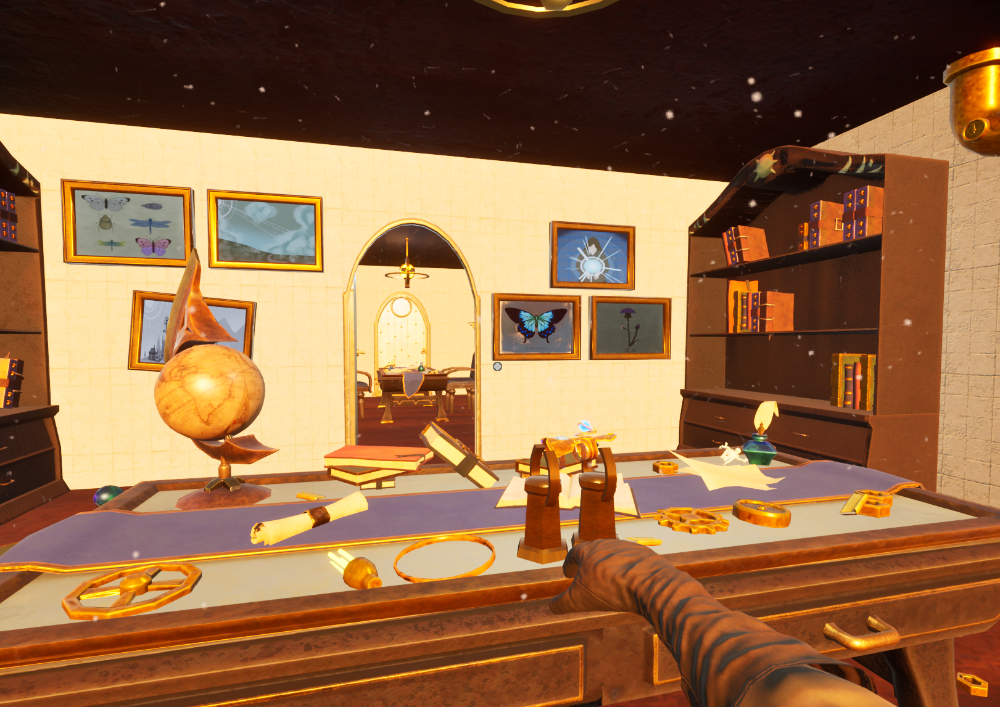
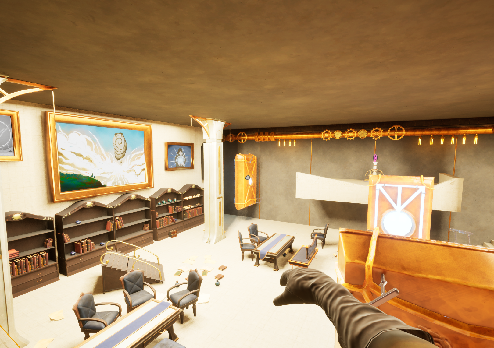
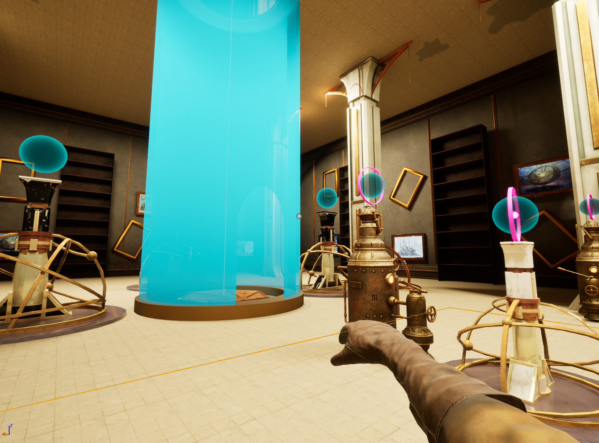

Light transfer
The gauntlet stores and transfers light, acting as the central interaction tool across puzzles.
GAMEPLAY PROGRAMMING
A puzzle-adventure built around a light-transfer gauntlet, environmental interaction and puzzle-driven world progression.
Jules takes place inside a gigantic library divided into sectors. Progress comes from solving environmental puzzles by moving light energy between machines and interactive objects.

The gauntlet stores and transfers light, acting as the central interaction tool across puzzles.
Doors, generators, altars and platforms react when their configured light requirements are satisfied.
Puzzle completion changes the world and opens new areas of the library.
Readable objects and environmental interactions reveal narrative context while the player explores.

My contribution covered the main interaction loop and a wide set of supporting gameplay systems.
